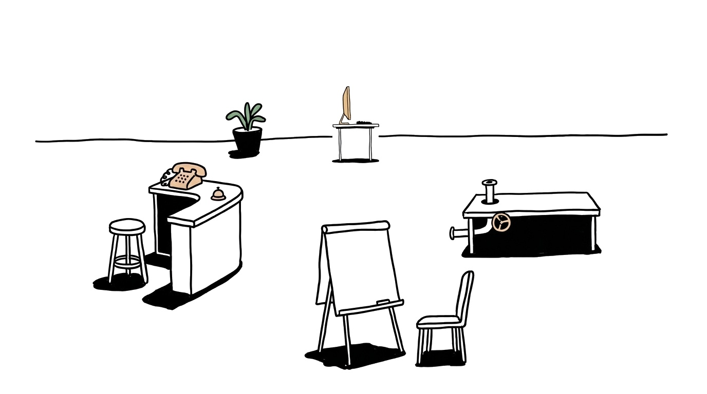
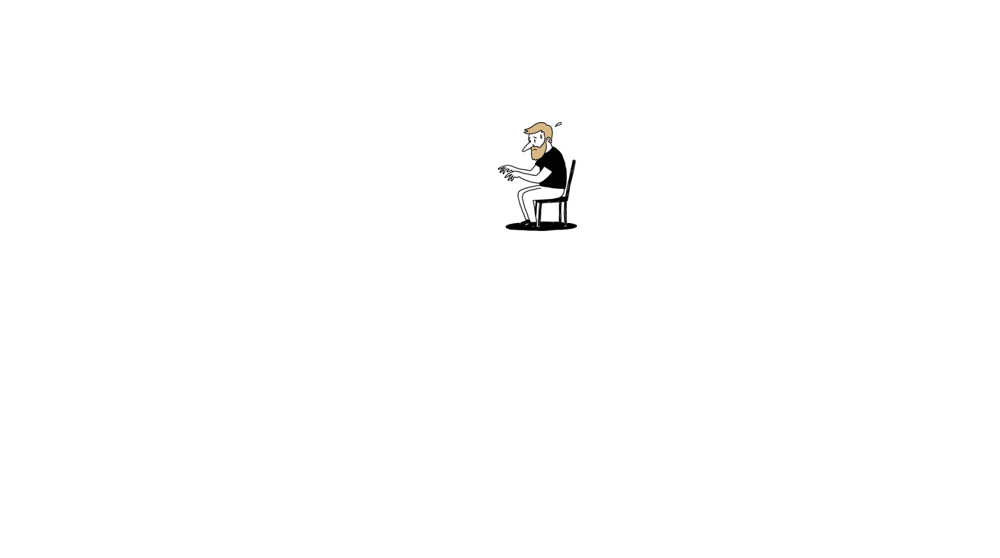

Теперь в штабе двое: AI-администратор у ресепшна отвечает клиентам, а AI-ассистент за столом с ПК ведёт данные в Google. Два стола ещё ждут своих: команду собираем воркшоп за воркшопом.


Boost Pro · «Собери свою AI-команду»